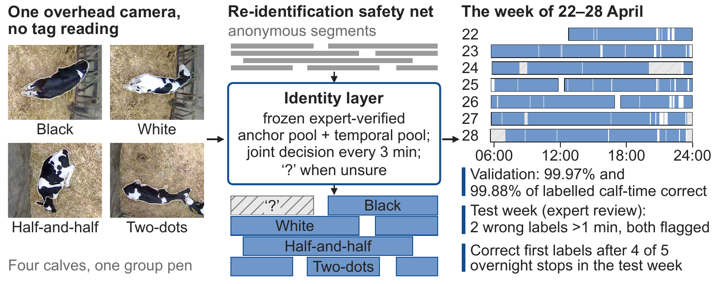
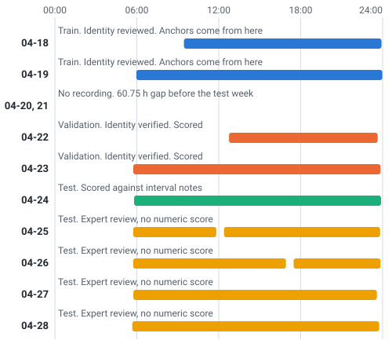

Paper in preparation
Resilient re-ID framework for trackers with over 99 % accuracy
Video tracking can follow objects in one environment for days. Production spaces such as farms and factories already keep a record of each target, as text or from sensors, and aligning vision with these records could support longitudinal analyses. Trackers, however, switch identities over long video, and one switch misaligns the rest of a target's history. Instead of chasing tracking scores, we built a lightweight re-identification safety net under a tracker.
A farm is our test case, and a hard one: four black and white dairy calves that look alike from above, one overhead camera, infrared nights and a recording stop of almost six hours every night. The safety net names every segment the tracker writes, revises a name when later evidence disagrees, and writes "?" or flags the segment for review when the evidence is weak.

The week
A tracker holds an identity only while it can follow an animal from frame to frame. On this farm that chain breaks every night.
- The camera stops every night, from about 23:50 to 05:45. The calves wake up somewhere else, often in dim infrared light.
- The calves look alike. All four are black and white, seen from above.
- Training and test are days apart. The verified examples come from 04-18 and 04-19, and the week starts 60 hours later.
So after each of the six nights, identity has to be rebuilt from appearance alone, without one wrong morning spoiling the rest of the week. Whole days are the units: two for training, two for validation and five for testing.

How it works

The tracker follows, but never names
SAM 3 with a backbone distilled for calves (FarmSAM) writes anonymous segments, one mask per calf per frame, and an RF-DETR detector re-seeds it when a calf is lost. Inside a segment identity follows the masks; appearance never steers the tracker.
The safety net names, offline
Masked crops every 15 s are embedded with DINOv3 ViT-S/16, a third of the body at a time. Every 3 minutes the layer matches them with individual exemplars in a frozen anchor pool of 30,588 verified training-day crops, blended 0.6 to 0.4 with a temporal pool from the week, and assigns the calves jointly, so that two segments at the same time never share a name.
Doubt is visible
A name changes only when the evidence clearly favours another calf, and then for the whole run (the part of a segment that carries one label), backward and forward. When the evidence is thin the layer writes "?" or flags the segment for review. Mask repair and a colour check clean the masks; neither reads identity.
Results
Scores are in calf-minutes, one calf for one minute. Accuracy of labelled time is correct ÷ (correct + wrong): "?" and time without a mask are left out and reported on their own.
Validation days
04-22 and 04-23 were used for ablations and tuning. The reference is an identity chain that a veterinarian reviewed end to end on overlay video.
| Day | Labelled time correct | Wrong, flagged (calf-min) | Wrong, silent (calf-min) | Left as "?" (calf-min) | With a reference (calf-min) |
|---|---|---|---|---|---|
| 04-22 | 99.97 % | 0.00 | 0.83 | 0.63 | 2,557.94 |
| 04-23 | 99.88 % | 0.54 | 4.14 | 3.89 | 4,127.48 |
All wrong time fell in daylight. The last half hour of 04-23, a pen-wide disturbance, is scored separately and not included above (93.31 % correct).
Test days
04-24 to 04-28 were set aside as test days (every reported setting is supported by the validation days alone; 04-24 was scored in some early design comparisons before it was set aside): 90.46 h of video, reviewed by the veterinarian at 50× speed (04-25 to 04-28 end to end on the final system's video, 04-24 interval by interval on an earlier version's video).
- No exchange of two calves' labels was found.
- Two wrong labels lasted more than a minute, and both were flagged. At the feeder on 04-24 a tracker mask hopped to a neighbouring calf, and a later joint decision gave the whole segment that calf's label, including about 10 minutes before the hop (08:20 to 08:30). After the last night, on 04-28, one calf carried another's label for 20 minutes until the layer corrected it at 06:00.
- 04-24 has a reference identity for every minute, from the veterinarian's interval notes. Against the notes as written, 99.27 % of labelled time was correct and 5.2 % of the reference time was left as "?". Re-examining only the intervals where the system and the notes disagreed showed that the notes placed one exchange 8.7 minutes early and recorded one that the tracks rule out. With these corrected, accuracy is 99.70 %; because only disagreements were re-examined, this correction can only favour the system, so both scores are given, the notes as written first.
- Caution costs coverage. 96.11 % of track time on the test days carried a calf label. The longest unlabelled stretch was on the evening of 04-24, after a contest over one calf's identity.
After each overnight stop
| Night | First labels in the morning | Checked against |
|---|---|---|
| 04-22 to 04-23 | All correct | Reviewed identity chain |
| 04-23 to 04-24 | All correct | Veterinarian's interval notes |
| 04-24 to 04-25 | No wrong identity found | Expert review of the video |
| 04-25 to 04-26 | No wrong identity found | Expert review of the video |
| 04-26 to 04-27 | No wrong identity found | Expert review of the video |
| 04-27 to 04-28 | One calf wrong for 20 min, flagged; correct from 06:00 | Expert review of the video |
Every first label was correct after five of the six stops.
Tracking front end and cost
| Days | Fragmented, track-hours before | After refinement |
|---|---|---|
| 04-22 | 2.81 | 0.37 |
| 04-23 | 3.87 | 1.52 |
| 04-24 to 04-28 | 24.56 | 3.90 |
On the test days every fragment episode of 10 minutes or more was repaired (19 before, 0 after). Tracking ran at 3.76 fps on one A10 GPU within 2.45 GiB of GPU memory; the identity layer runs offline on a CPU. The one-time human input was 38 minutes of 50× training-day video watched by the veterinarian, and one sheet of stills on which the calves were named.
Scope. One pen, four calves, one camera and one week. The method uses no calf-specific trait, but it has been tested only on calves. No frame has hand-drawn mask ground truth. The tables are also in the repository as CSV.
What makes the re-ID work
The design follows four lessons, each measured on the validation days.
- One crop is too weak; many crops decide. Seen from above, the calves differ mainly in how much of the coat is white and where, and infrared light washes this out. A single crop names the right calf 87.92 % of the time; assigned jointly in 5-minute windows against a correctly labelled pool, the same crops give 99.26 % right decisions, because per-crop errors do not line up. The layer therefore never names a calf from one crop, and keeps deciding: on tracks of an earlier tracker version, deciding once per segment labelled 85.56 % of frames correctly on 04-22 (46.5 % at night), while re-deciding jointly every 3 minutes made no silent error on either validation day.
- Appearance must not steer the tracker. The first version let the appearance pool re-assign the four tracks at regular intervals. With evidence this weak per crop, it permuted tracks that the tracker had been following correctly: in three tracked stretches of the validation days, 47.6 % of 197,213 frames carried a wrong label. Inside a segment, association is spatial and belongs to the tracker; identity is decided by a separate layer that sees the whole timeline, may revise a label and may abstain.
- Individual exemplars, not averages. Matching a crop with its five most similar individual exemplars beat hourly averages of the same features by 6.16 percentage points (95 % CI 3.73 to 8.77), on 536 query windows of 04-22. Splitting each crop into thirds did not raise accuracy (94.59 % against 95.34 % for whole crops, a tie), but correct decisions had larger margins, so the split was kept.
- A pool fed by its own labels locks in its first error; frozen anchors stop it. On earlier tracks, 99.26 % of 5-minute windows were right against a correctly labelled pool, but 92.00 % when the matcher's own decisions fed the pool, and only 54.26 % on the night of 04-22. The frozen anchor pool of verified training-day crops is the reference this loop cannot corrupt. On identical final tracks:
| Pool | 04-22 | 04-23 | Night of 04-22 |
|---|---|---|---|
| Temporal pool rebuilt every morning | 90.66 % | 91.56 % | 59.80 % |
| Temporal pool accumulated over the week | 94.87 % | 99.90 % | 74.52 % |
| + frozen anchors | 99.97 % | 99.90 % | 100 % |
| + colour filter (final system) | 99.97 % | 99.88 % | 100 % |
Labelled time correct.
Other settings compared
| Setting | Final choice | Compared with | Result on the validation days |
|---|---|---|---|
| Cue | DINOv3 embedding | Colour histogram; last-seen position | Embedding +11.38 and +24.81 pts over all queries; colour fails at night (57.9 %), position by day (63.6 %) |
| Anchor weight | 0.6 | 0 to 1 | Every labelled crop correct at every weight; crops flagged 1.9 % against 23.9 % without anchors and 11.1 % with anchors alone |
| Window length | 3 min | 5 min | 95.3 / 96.8 % against 77.1 / 80.5 % of crops labelled, no silent error at either |
| Unnamed last calf | Assign it and flag it | Leave it unlabelled | Coverage on 04-23 97.6 % against 78.3 %, no silent error |
The cue comparison used the original SAM 3 tracks; anchor weight, window length, the last-calf rule and the backbones below used tracks of an earlier tracker version. The paper's supplement gives every comparison in full.
A small embedding model is enough
On the same crops, the smallest DINOv3 model was the most accurate per crop. In 5-minute windows all four were within sampling error of each other: aggregation over time, not model capacity, carries the decision.
| DINOv3 backbone | Parameters | Embedding size | Per crop | 5-min windows |
|---|---|---|---|---|
| ViT-S/16 | 22 M | 384 | 87.92 % | 99.26 % |
| ViT-B/16 | 86 M | 768 | 85.91 % | 98.97 % |
| ViT-L/16 | 303 M | 1,024 | 86.75 % | 99.34 % |
| ViT-7B/16 | 6,716 M | 4,096 | 84.87 % | 99.04 % |
Per crop: 6,814 decisions. Windows: 1,355 five-minute windows against a correctly labelled pool. All four models named every calf correctly after the 04-22 to 04-23 night.
Videos
Videos run at 50× speed, one frame every 2 s of real time, with the clock in each frame.
The week, day by day
One video per day, from the first light after the night. Each colour is one calf. While people are in the pen, the picture is mosaicked, and the feed alley beyond the rail is mosaicked throughout.
Mask refinement
Teacher and student
Masks
Per-frame masks are on Hugging Face, one gzipped JSON file per video clip, at 5 fps.
| Set | Days | What it is |
|---|---|---|
| Generated | 04-22 to 04-28 | Final refined masks, with rules that map tracker slots to calves over the day. |
| Verified | 04-18, 04-19, 04-22, 04-23, 04-24 | Masks of an earlier pass whose identity labels people checked or reviewed. The dataset card says how, day by day. |
Reading a mask
import gzip, json
from pycocotools import mask as mask_utils
with gzip.open("masks_FarmA_R1_ch01-20240425-054428-061038.json.gz", "rt") as f:
clip = json.load(f)
frame = clip["frames"][0] # keys 0-3 are tracker slots, not calves
rle = frame["masks"]["0"] # None if that slot has no mask
h, w = rle["size"]
binary = mask_utils.decode(mask_utils.frPyObjects(rle, h, w)) # h x w, uint8Slots become calves through relabel_week_<day>.json. See the dataset card for the layout, and examples/decode_masks.py for a decoder that needs only NumPy.
The video is camera FarmA_R1 of the Calf Play Behavior Dataset (doi:10.57967/hf/11689), described in its dataset paper (arXiv:2611.21706). Each mask file carries the name of its clip there.
Licences
| Item | Terms |
|---|---|
| Code | MIT |
| Masks and labels | SAM License, because they come from SAM 3 and a student distilled from it |
| SAM 3 | SAM License, gated |
| Calf student and calf detector | SAM License, at Calf-Identity-Tracking-Weights |
| DINOv3 ViT-S/16 | DINOv3 License |
| RF-DETR (library) | Apache-2.0 |
Citation
The paper is in preparation. Until it is out, please cite this repository and the works below.
@misc{calf_identity_week,
title = {Resilient re-ID framework for trackers with over 99\,\% accuracy},
author = {Yang, Haiyu},
year = {2026},
url = {https://github.com/Sonam525/Re-id-for-tracking}
}- Distillation paper: arXiv:2604.27128. Code at FarmSAM.
- Video dataset: doi:10.57967/hf/11689. Dataset paper: arXiv:2611.21706.